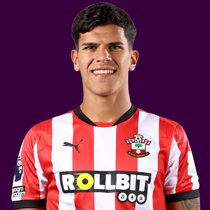

PITCHKEEP
Premier League ranks
Player File · MID TOT · Premier #119

Mateus Fernandes
MID · Spurs · age 22 · £6.0m
2025/26 Premier League
| Year | Starts | Min | G | A | xG | xA | CS | GC | Bonus | YC | Sleeper | FPL |
|---|---|---|---|---|---|---|---|---|---|---|---|---|
| 2025/26 | 35 | 3017 | 3 | 4 | 1.99 | 2.96 | 8 | 50 | 7 | 7 | 181.6 | 135 |
Plus
- 181.6 Sleeper BPL 2025 points (Pitch #33).
- 3017 minutes, 35 starts. Availability is a skill.
Minus
- Consensus 111.25 vs Sleeper #33 - the industry is cooler than last year's box score.
- Board spread 33-179 (Sleeper BPL 2025 to RotoWire FPL 400).
PitchKeep Take · The Premier
Mateus Fernandes is a midfielder for Spurs, age 22, £6.0m. The Premier ranks him 119th overall by splitting Sleeper BPL 2025 (#33, 181.6 points) with the consensus of 4 other boards (111.25). Last year's Sleeper line ran 78 spots ahead of the expert/FPL mix. The third list keeps some of that production bump and refuses to throw the other boards out. That is the whole point of not just republishing The Pitch.
The 2025/26 Premier League line is 35 starts and 3017 minutes, 3 goals and 4 assists, 103 tackles and 84 CBI. Official FPL scored it at 135 points (3.8 per match) with 7 bonus. Sleeper's table turned the same counting stats into 181.6. Midfielders get 9 a goal, 6 an assist, and 1 a clean sheet, plus a full tackle/CBI stream. That is why a six who plays every week can outrank a ten-goal winger who sits.
Underlying: 1.99 xG, 2.96 xA, 4.95 xGI. Role at Spurs is the 2026/27 question sitting under the 2025/26 number. 35 starts is a starter. Anything under 25 starts is a rotation warning we already priced. Minutes are the skill that survives a finishing regression. The friendliest board is Sleeper BPL 2025 at 33; the coldest is RotoWire FPL 400 at 179.
Market: £6.0m, 11 boards on the file. Price is the FPL tax, not the rank. The Premier is who produced and who the boards still believe. FPL's own EP-next is 2.1. ICT 146.3.
Instruction: deep-league starter, shallow-league watchlist. The 2025/26 line got him onto the 400. A role change gets him off it. Watch minutes, not vibes. Nearby on The Premier: Junior Kroupi, Joe Rodon, Francisco Evanilson. Versus The Pitch (Sleeper-only #33), the hybrid moves him down to #119. That move is the third list doing its job.
Age 22 is the other half of a hybrid. The 2025/26 counting line is one season. The Athletic-style youth lean on this board exists specifically so a Spurs kid does not get stuck behind a 32-year-old who had a nice bonus year. Sleeper still has to see the minutes. 35 starts is the beginning of a case, not the end of one.
How to use the file: The Pitch is the Sleeper-only 400 (he is #33 there). The Premier is the 50/50 with every other board we track. Attack, Midfield, Defence, and Keepers re-rank the same Sleeper table by position. BK Value on this page follows The Premier when you are on the hybrid calculator and The Pitch when you are on the Sleeper calculator. Same curve either way - 12,000 at 1.01. 7 yellows are a real Sleeper tax. Unranked sources are skipped, never treated as 999, which is why a player missing from Yahoo's XI is not secretly ranked 400th.
Sleeper vs FPL
Same 2025/26 line, two scoring tables
Board graph
Spread 33-179 · 11 sources
Tape · 2025/26 Premier League
Mateus Fernandes vs Tottenham Hotspur | All dribblings, goals and passes! | Premier League 6/4/2025
Every Board
Spread 33-179 · 11 sources
| Source | Rank |
|---|---|
| Sleeper BPL 2025 | 33 |
| The Athletic PL 50 | 41 |
| FPL 2025/26 Points | 49 |
| FPL ICT Index | 55 |
| RotoWire GW1 | 58 |
| FPL xGI | 97 |
| FPL Price Board | 107 |
| FPL Ownership | 124 |
| FPL EP Next | 153 |
| RotoWire Fantrax / Sleeper 400 | 167 |
| RotoWire FPL 400 | 179 |
PK News
- Liverpool XI vs Ipswich: Barcola debut, predicted lineup, confirmed team news, injury latest for Premier League
- FPL Gameweek 3 Tips: Fantasy Football Must-Haves, Captain Picks and Injury Report
- Every Premier League transfer this summer as window deadline passes and Guehi to Liverpool suffers late collapse
- Manchester United transfer news: Unsuccessful move for City fullback, a blocked deal and Deadline Day updates
- Chelsea vs. Brighton: Xabi Alonso explains Enzo Fernandez, Robert Sanchez absences from Premier League clash
All players · The Premier · The Pitch · PK News · Calculator